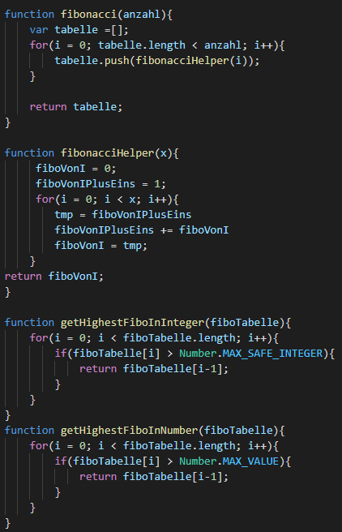
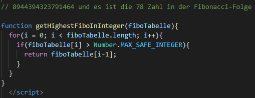
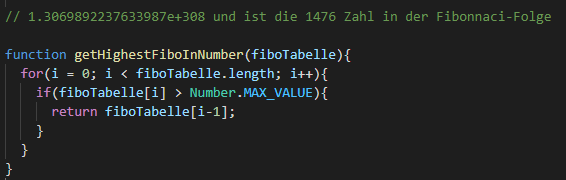
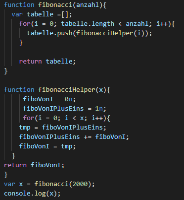

Fibonacci
Schreiben Sie im Browser die Fibonacci-Funktion in JavaScript und geben Sie die ersten 2000 Fibonacci-Zahlen 0,1,1,2,3,5,8,13,... auf der Konsole mit console.log() aus. Achten Sie auf Performanz: Berechnen Sie jeden Fibonacci-Wert nur einmal. Speichern Sie zu diesem Zweck jede bereits berechnete Fibonacci-Zahl in einer Tabelle:
Was ist die groesste Fibonacci-Zahl, die sich noch als Integer sicher speichern laesst (Number.MAX_SAFE_INTEGER)? Die wievielte Fibonacci-Zahl in der Fibonacci-Folge ist das?:
Was ist die groesste Fibonacci-Zahl, die sich noch als Number speichern laesst (Number.MAX_VALUE)? Die wievielte Fibonacci-Zahl in der Fibonacci-Folge ist das (d.h. welche Stelle in der Fibonacci-Folge)?:
Wechseln Sie zu BigInt, um alle 2000 Fibonacci-Zahlen korrekt anzuzeigen. Geben Sie hier HTML- und JavaScript-Code zusammen ein:
